01Visibility of System Status
ISSUE
The Delay Information screen did not clearly communicate when the information was last updated.
FIX
Added updated arrival information, delay reason and a Last updated time.
Field Notebook · UX Research Case Study
A research-first UX case study tracing the campus shuttle service from a broken, unpredictable daily commute to a prioritized, evidence-based set of digital must-haves — following empathize, define, ideate, evaluate and prioritize, in that order.
Begin at the problem space ↓Before any solution
The campus shuttle service is an important mode of transportation for many students, especially day boarders who depend on it to travel between the campus and nearby transport points. During daily commuting, students often experience delays, uncertainty, and difficulty obtaining reliable information about the shuttle service. These issues affect their punctuality, daily planning, and overall commuting experience.
Understand real users before assuming what they need.
Methodology
Rather than starting from a proposed solution, research began with direct field observation of real students using the shuttle service — treated as objectively as watching CCTV footage with audio: recording only what was directly visible or heard. Thoughts and feelings were interpreted later during the Empathy Map and Journey Map synthesis.
Exhibit A · Assumption
Before field data was synthesized, a proto-persona was sketched from initial assumptions about who the user might be. This is explicitly a starting hypothesis, not a research finding.
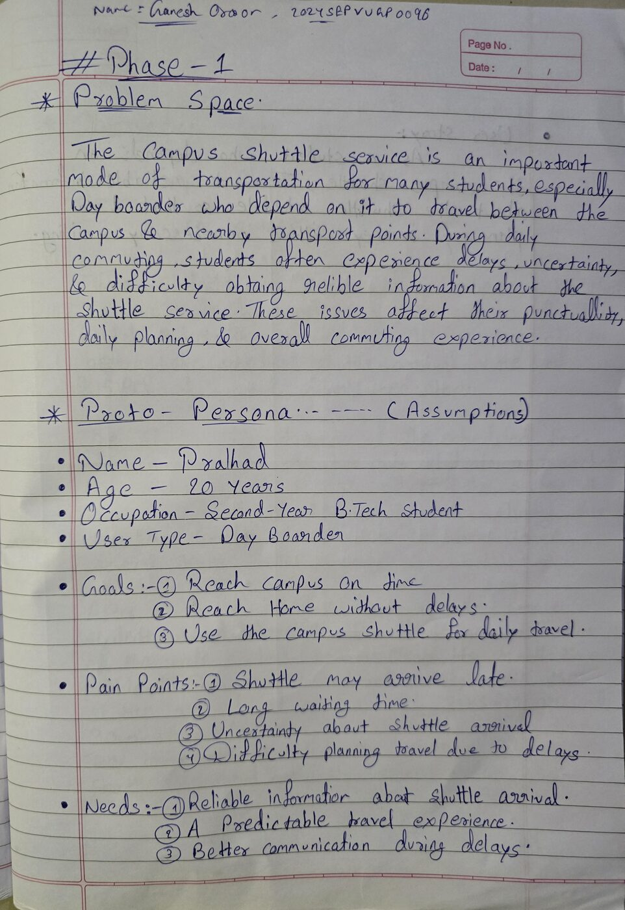
Click to enlarge| Name | Pralhad (assumed) |
|---|---|
| Age | 20 years |
| Occupation | Second-year B.Tech student |
| User type | Day boarder |
Exhibit B · Research-based
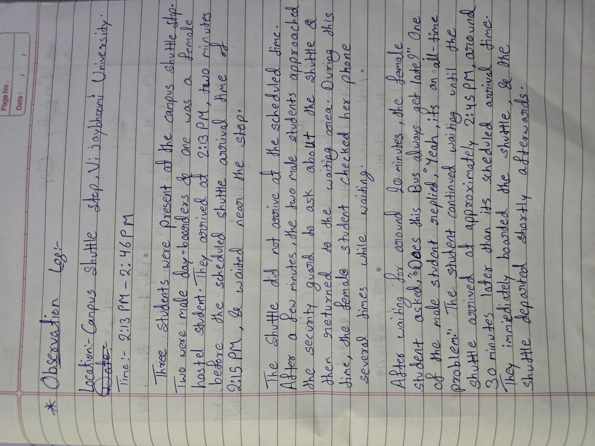
Click to enlargeThree students were present at the campus shuttle stop. Two were male day-boarders and one was a female hostel student. They arrived at 2:13 PM, two minutes before the scheduled shuttle arrival time of 2:15 PM, and waited near the stop.
The shuttle did not arrive at the scheduled time. After a few minutes, the two male students approached the security guard to ask about the shuttle and then returned to the waiting area. During this time, the female student checked her phone several times while waiting.
After waiting for around 20 minutes, the female student asked, “Does this bus always get late?” One of the male students replied, “Yeah, it's an all-time problem.” The students continued waiting until the shuttle arrived at approximately 2:45 PM, around 30 minutes later than its scheduled arrival time. They immediately boarded the shuttle, and it departed shortly afterwards.
Exhibit C · Research-based
After the field observation, the proto-persona was replaced with a persona grounded in what was actually observed and heard at the shuttle stop.
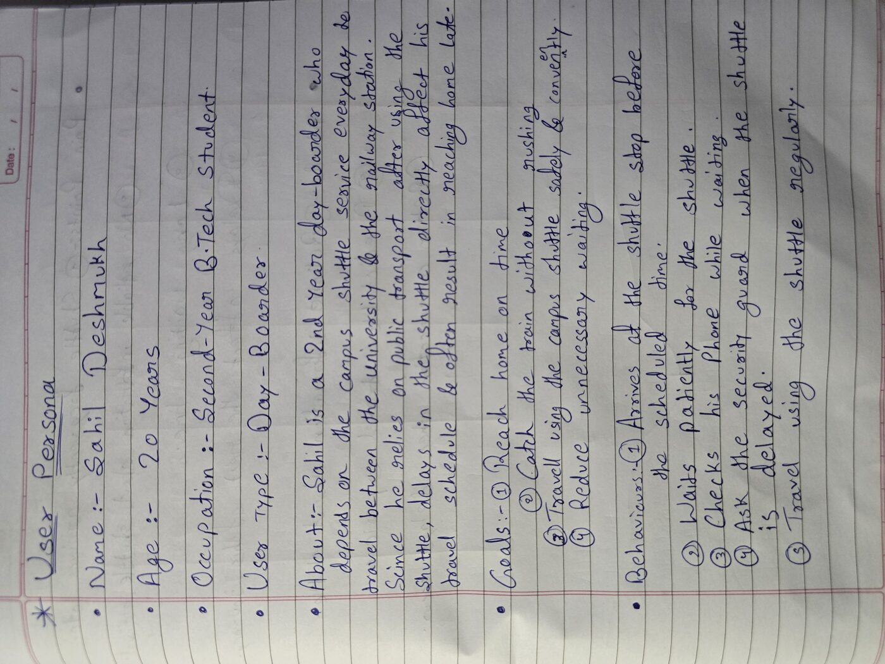
Click to enlarge| Name | Sahil Deshmukh |
|---|---|
| Age | 20 years |
| Occupation | Second-year B.Tech student |
| User type | Day-boarder |
Sahil is a 2nd-year day-boarder who depends on the campus shuttle service every day to travel between the university and the railway station. Since he relies on public transport after using the shuttle, delays in the shuttle directly affect his travel schedule and often result in reaching home late.
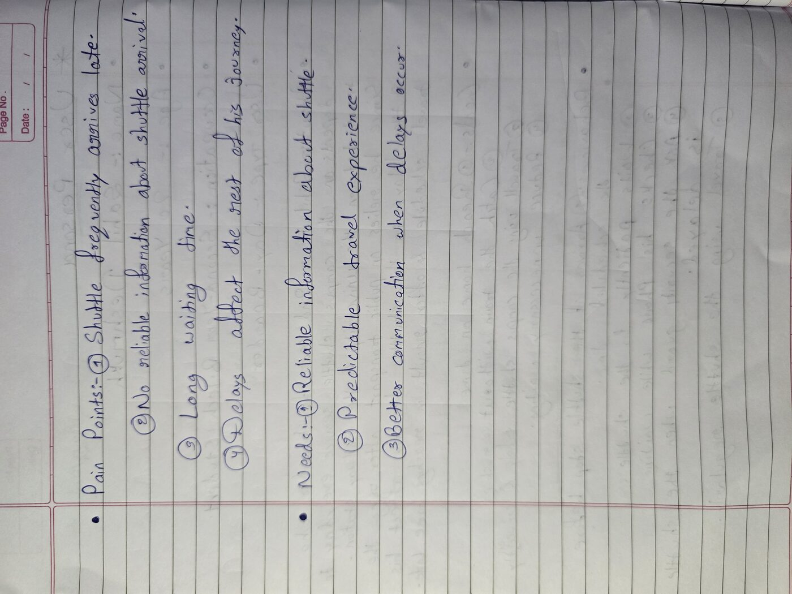
Click to enlargeExhibit D
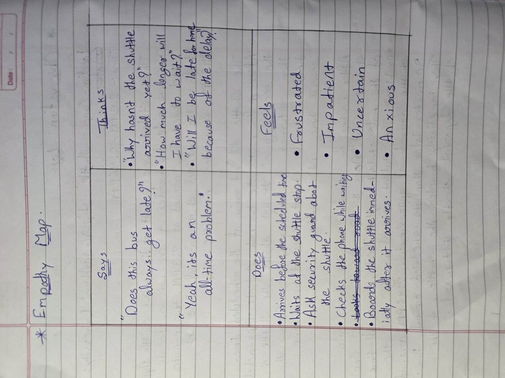
Click to enlargeExhibit E
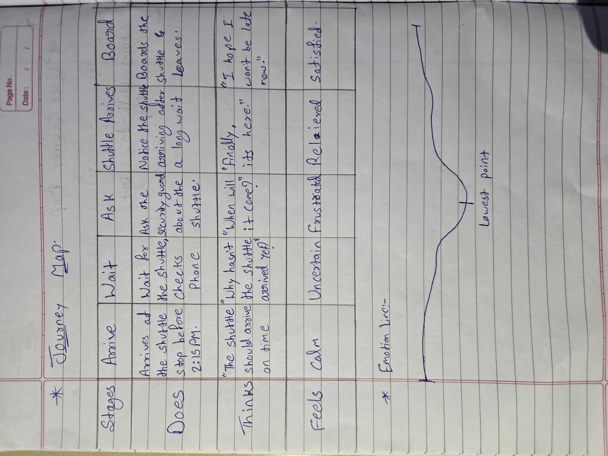
Click to enlarge| Stage | Arrive | Wait | Ask | Shuttle Arrives | Board |
|---|---|---|---|---|---|
| Does | Arrives at the shuttle stop before 2:15 PM | Waits for the shuttle, checks phone | Asks the security guard about the shuttle | Notices the shuttle arriving after a long wait | Boards the shuttle & leaves |
| Thinks | “The shuttle should arrive on time” | “Why hasn't the shuttle arrived yet?” | “When will it come?” | “Finally, it's here.” | “I hope I won't be late now.” |
| Feels | Calm | Uncertain | Frustrated | Relieved | Satisfied |
The emotion line drops sharply during the Wait and Ask stages — the period with no information and no way to know how much longer the wait will last. This is the single lowest point of the entire journey.
Exhibit F · Derived from the journey map
Students face long waiting times & uncertainty due to frequent shuttle delays & the lack of reliable arrival information.
This statement — and not a solution — is the output of Phase 1. It is the single problem the rest of this case study responds to.
Exhibit F (cont.)
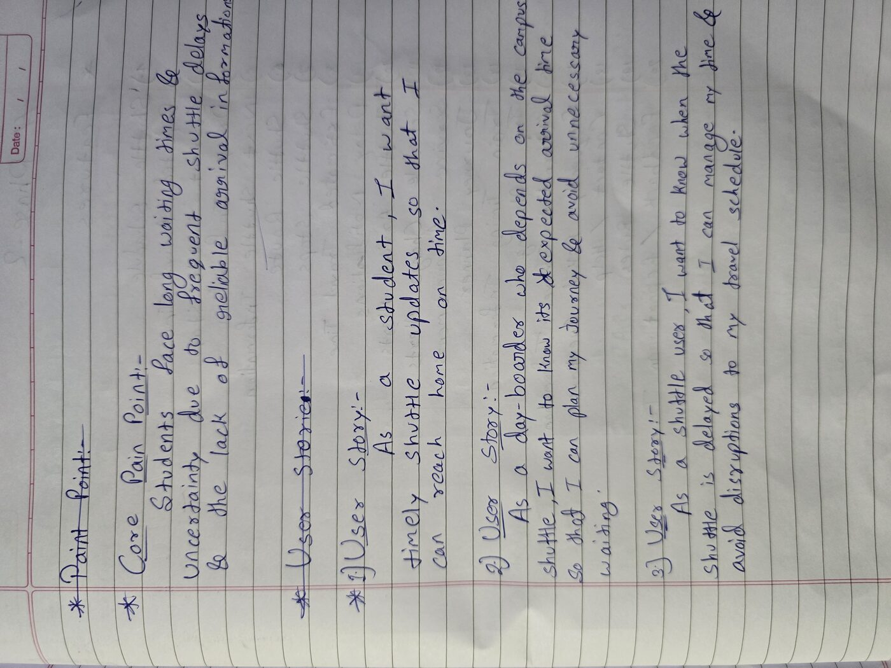
Click to enlargeAs a student, I want timely shuttle updates so that I can reach home on time.
As a day-boarder who depends on the campus shuttle, I want to know its expected arrival time so that I can plan my journey & avoid unnecessary waiting.
As a shuttle user, I want to know when the shuttle is delayed so that I can manage my time & avoid disruptions to my travel schedule.
Generate content from the user stories, then test it with real people.
Exhibit G
Twenty candidate content items were generated directly from the three user stories above — only after the user's needs were understood.
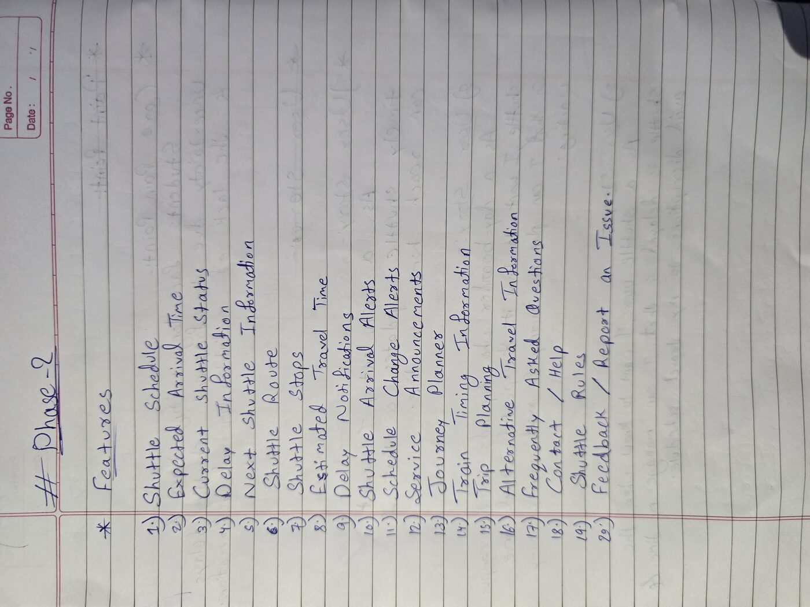
Click to enlargeExhibit H
Participants created their own groups and placed the 20 items according to their own understanding, with no predefined categories provided.
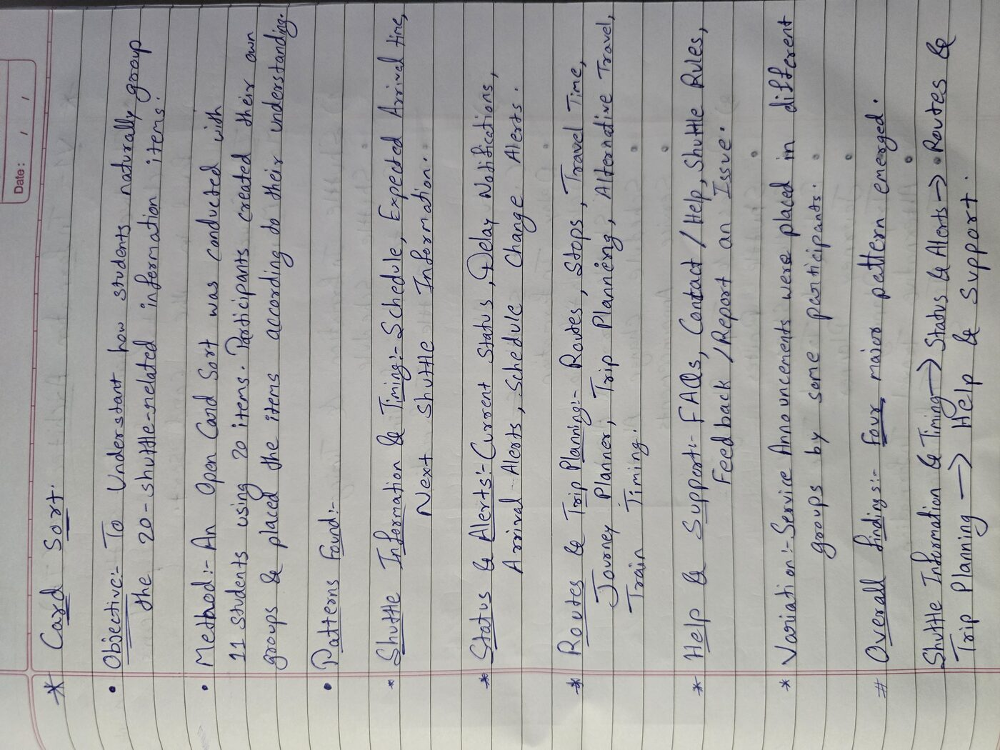
Click to enlargeSchedule, Expected Arrival Time, Next Shuttle Information
Current Status, Delay Notifications, Arrival Alerts, Schedule Change Alerts
Routes, Stops, Travel Time, Journey Planner, Trip Planning, Alternative Travel, Train Timing
FAQs, Contact / Help, Shuttle Rules, Feedback / Report an Issue
Overall finding: four major patterns emerged, in this order — Shuttle Information & Timing → Status & Alerts → Routes & Trip Planning → Help & Support.
Exhibit I
The card sort's four emergent groups became the top-level menu structure.
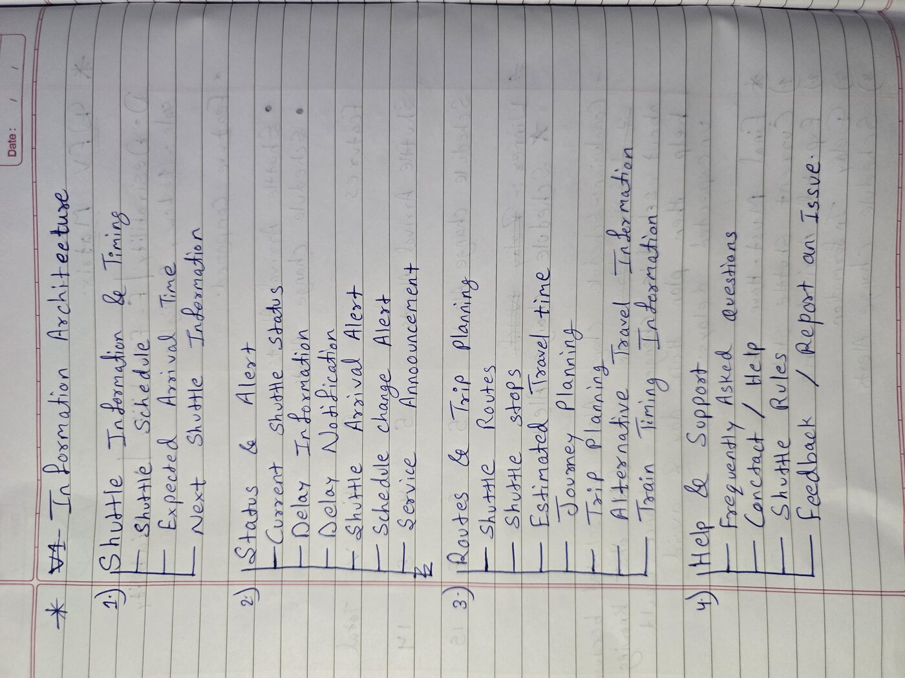
Click to enlargeExhibit J
Objective: To test whether users could easily find information in the V1 Information Architecture. Method: A tree test was conducted with 5 students using the V1 Information Architecture. They were given 5 tasks and asked to find the relevant information.
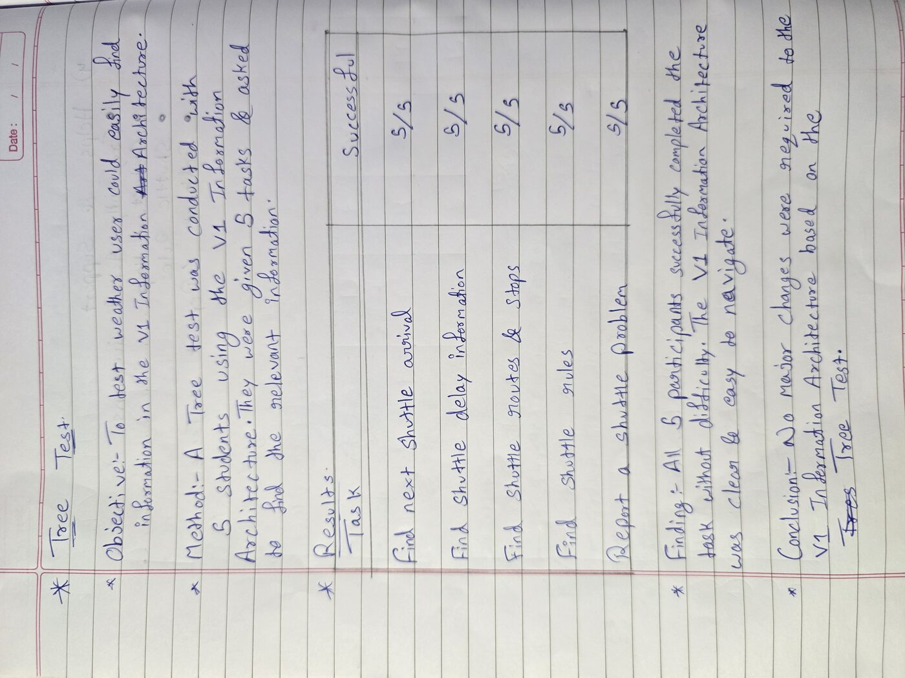
Click to enlarge| Task | Successful |
|---|---|
| Find next shuttle arrival | 5 / 5 |
| Find shuttle delay information | 5 / 5 |
| Find shuttle routes & stops | 5 / 5 |
| Find shuttle rules | 5 / 5 |
| Report a shuttle problem | 5 / 5 |
Exhibit J (cont.)
Decide what ships first, and defend the decision with evidence.
Exhibit K
Features were prioritized based on their importance in reducing shuttle-delay uncertainty and improving the user's experience.
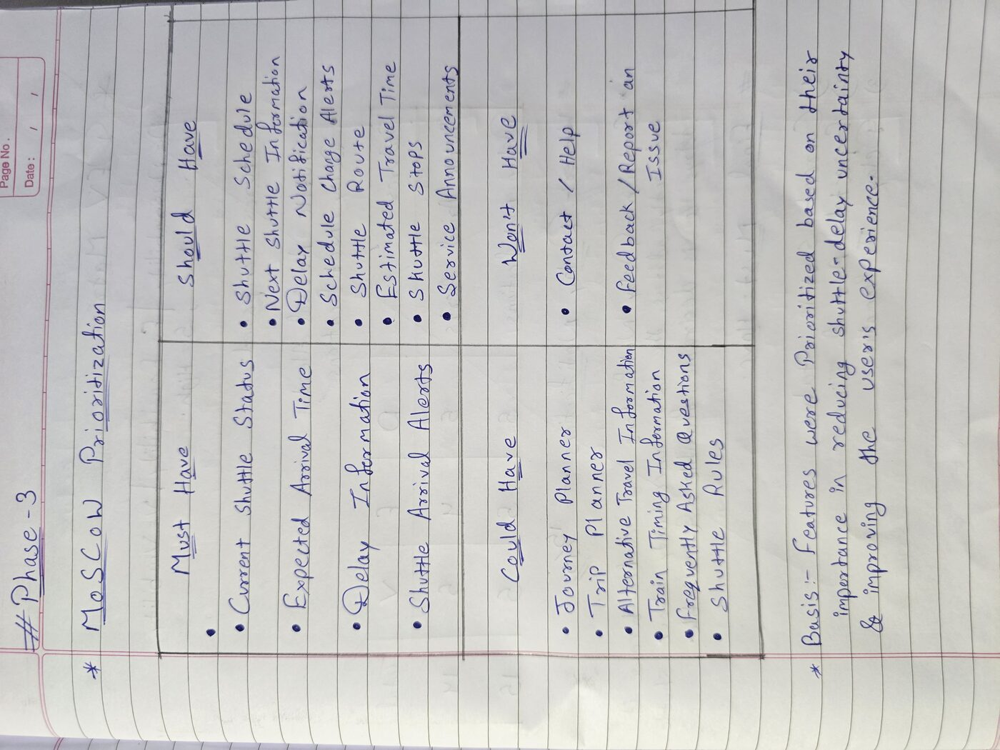
Click to enlargeExhibit L
Two features were genuinely difficult to choose between for the final Must-Have slot: Shuttle Arrival Alerts and Schedule Change Alerts. They were scored against Desirability, Feasibility and Viability, on a scale of 1 (low) to 5 (high).
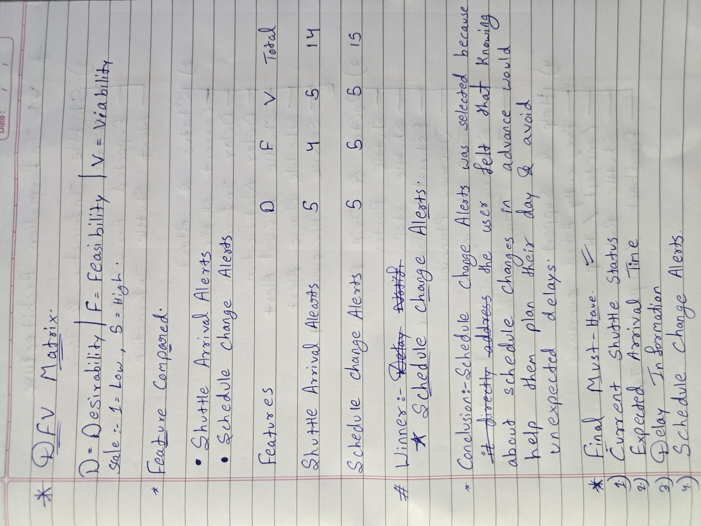
Click to enlarge| Feature | D | F | V | Total |
|---|---|---|---|---|
| Shuttle Arrival Alerts | 5 | 4 | 5 | 14 |
| Schedule Change Alerts Winner | 5 | 5 | 5 | 15 |
Prioritized outcome
The final four Must-Have items, carried forward from research through prioritization. These describe what information matters most — not a finished, built application.
Removes the uncertainty of not knowing where the shuttle is right now.
Lets students judge how long they actually need to wait.
Answers the exact question asked in the field: “does this always get late?”
DFV-matrix winner — advance notice that lets students re-plan their day before a delay happens, not after.
Reflection
Field observation of three real students revealed that the campus shuttle's core problem was not a lack of technology, but a lack of reliable information during unpredictable waits. The empathy map and journey map located the lowest emotional point precisely at the "Wait" and "Ask" stages — the moments with no information at all. That single pain point produced three user stories, which in turn produced twenty candidate content items. Card sorting with eleven students and a tree test with five students validated a four-category information structure without requiring any changes. MoSCoW and a DFV matrix then narrowed twenty items down to four evidence-backed must-haves, with Schedule Change Alerts winning the closest contest because it addresses the uncertainty — not just the delay itself. The research shaped every decision in this document; no solution was assumed before the users were understood.
Turn the prioritized MVP into screens, test the experience, and learn what needs another iteration.
The work continues
The Final MVP established what information matters. The next phase asks a different question: how should that information be structured, presented, tested and refined? The following work continues directly from the four prioritized must-haves above.
Exhibit M · MVP → screen structure
The wireframes translate the previously prioritized MVP into a concrete screen structure. The earlier IA is carried forward, while the wireframes focus on hierarchy, navigation, information placement and interaction states.
Status, arrival, delay and schedule-change information become the four main entry points.
The supplied screens cover a normal result, loading, and information-unavailable state.
Back is available on information screens, while Cancel provides an exit from loading.
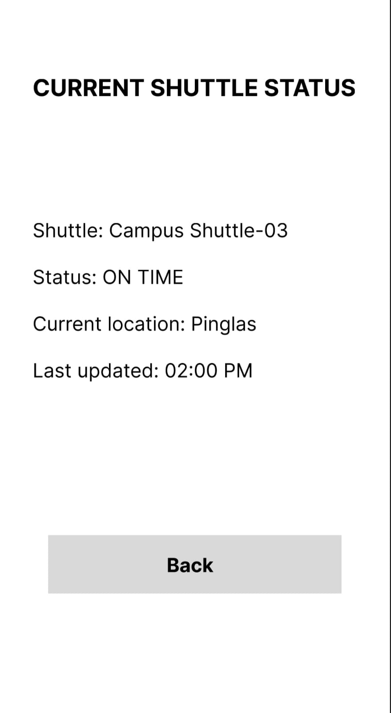
Click to enlarge Click to enlarge
Click to enlarge
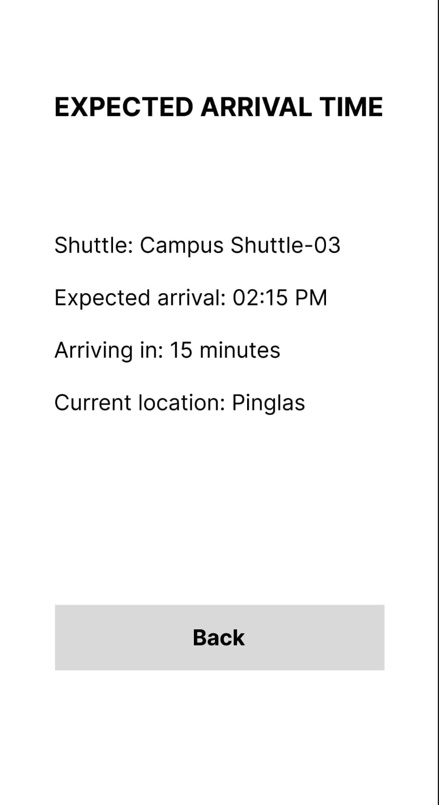
Click to enlarge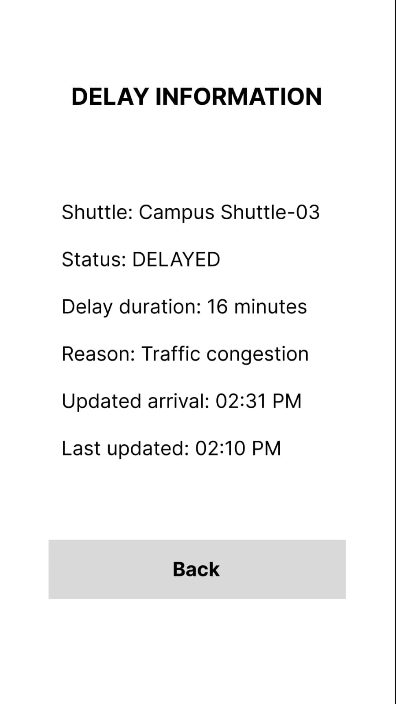
Click to enlarge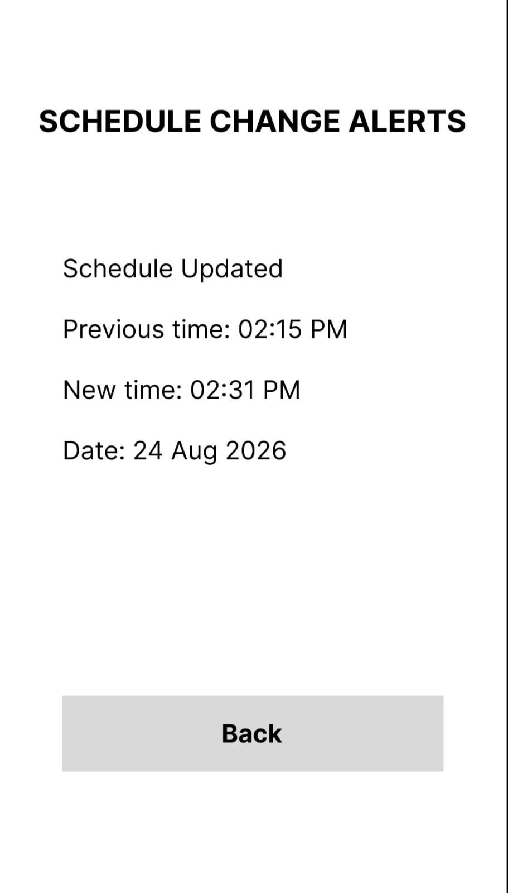
Click to enlarge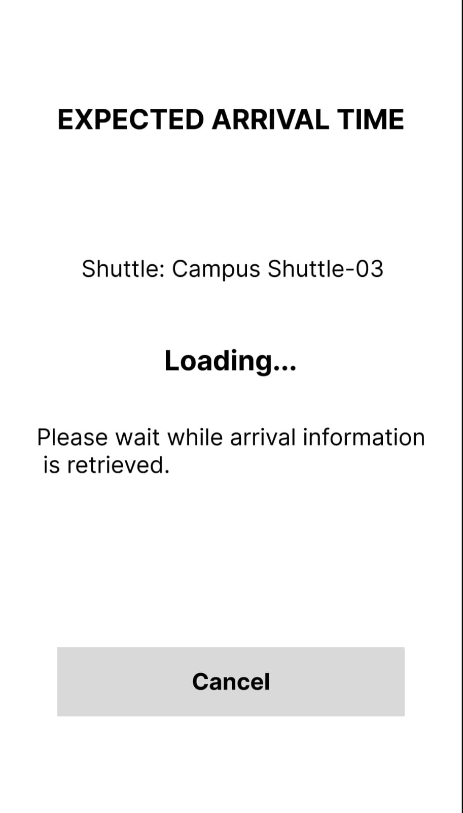
Click to enlarge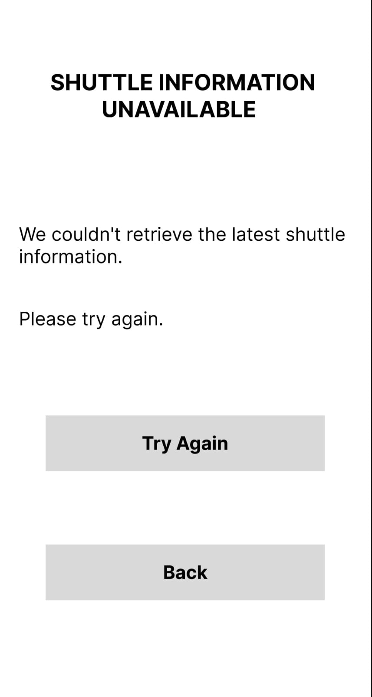
Click to enlargeExhibit N · Nielsen's usability heuristics
Three heuristics were inspected: Visibility of System Status, User Control & Freedom, and Error Prevention. The supplied notes confirm issues under the first two; Error Prevention was inspected separately and is not presented here as a confirmed violation.
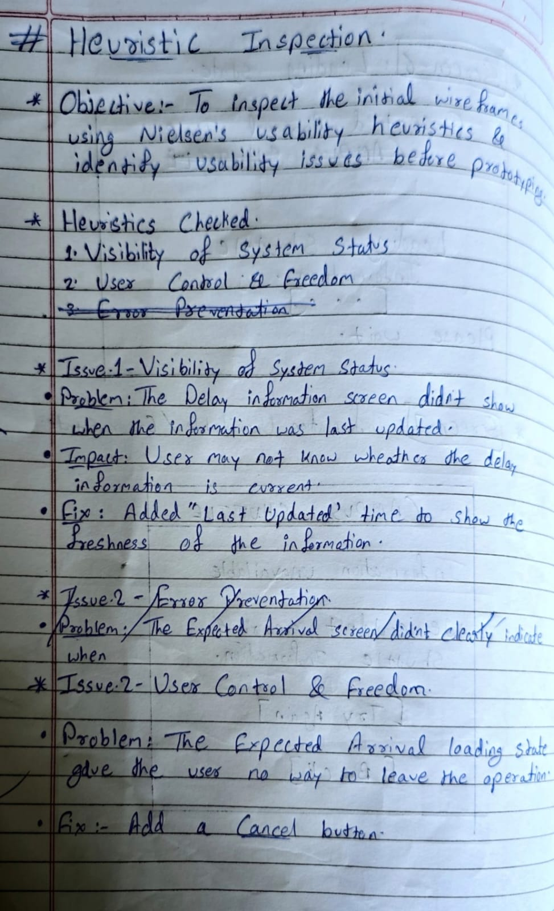
Click to enlargeConfirmed issue: the initial delay screen did not show when its information was last updated.
Confirmed issue: the initial loading state did not provide a way to leave the operation.
Inspected, but no confirmed violation is claimed from the supplied evidence.
The Delay Information screen did not clearly communicate when the information was last updated.
Added updated arrival information, delay reason and a Last updated time.
The Expected Arrival loading state gave the user no way to leave the operation.
Added a Cancel action so the user can exit the loading state.
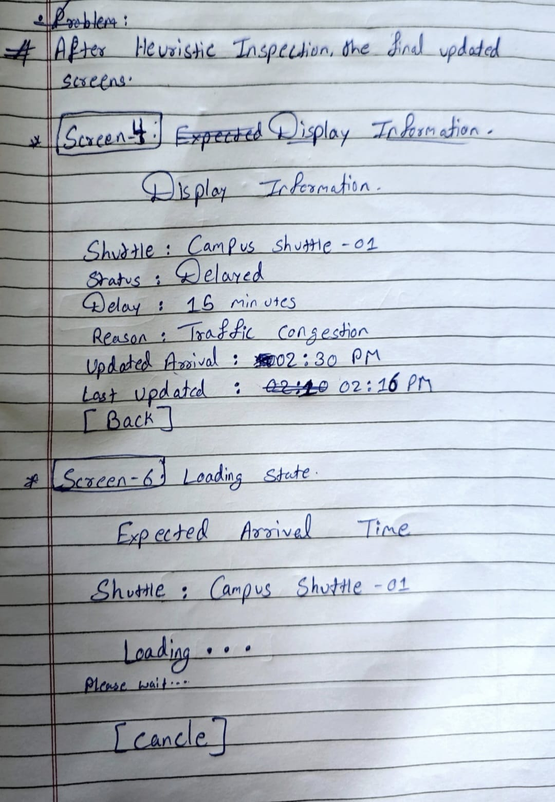
Click to enlargeExhibit O · Connected interaction flow
The supplied prototype contains seven documented screens. The important change at this stage is that the information architecture is no longer only a structure on paper — the screens are connected through concrete navigation and state transitions.
Exhibit P · 5 formal participants · 25 task attempts
The formal testing round focused on whether participants could find the four MVP information areas and recover appropriately when shuttle information could not be retrieved.
Find the shuttle's current status and location.
Find when the shuttle is expected to arrive.
Find the shuttle delay information.
Check whether the shuttle schedule has changed.
Show what you would do if shuttle information cannot be retrieved.
| Task | Independent | Needed help / failed | Completion |
|---|---|---|---|
| T1 · Current status & location | 4 / 5 | 1 failed | 80% |
| T2 · Expected arrival | 4 / 5 | 1 failed | 80% |
| T3 · Delay information | 3 / 5 | 2 needed help | 60% |
| T4 · Schedule change | 5 / 5 | — | 100% |
| T5 · Information unavailable | 5 / 5 | — | 100% |
Exhibit Q · Findings from the recorded round
The strongest friction points were not failures of the core information itself, but confusion between feature labels that answer closely related questions.
Some users confused where the shuttle is now with when the shuttle will arrive.
Some users confused a current delay with a change to the planned schedule.
One participant suggested adding more features. This is treated as a future opportunity, not a new MVP requirement.
One participant suggested a Report / Support feature. This is also treated as a future opportunity.
Exhibit R · Proposed next step · Not retested
The next iteration would make the four home-screen labels answer the user's question more explicitly. These changes are proposed in response to the observed confusion; they are not presented as validated outcomes.
Exhibit S · Peer research · Comparative benchmark
I compared three peer projects using the same discussion-guide dimensions: the problem they solve, their information architecture, how Must-Haves were selected, the main user task, error or alternative states, key differences, reasons behind their approach, and what I learned for Campus Shuttle.
Reducing uncertainty after students submit administrative requests at Vijaybhoomi University.
Four groups: My Requests, New Request, Updates and Actions, and Help. Card sorting created the groups; tree testing then led to moving Delay Update into My Requests.
They used MoSCoW, then DFV to compare Expected Completion Date and Progress Timeline. Expected Completion Date became the fourth Must-Have.
Track an administrative request: see current status, expected completion, and updates without repeated follow-ups.
The case study includes Pending Action, Missing Document Alert, Status Update Notification, Comments/Admin Updates, Help/FAQ and Contact Concerned Department. It does not document a specific prototype error-state flow.
The peer's system focuses on administrative-request tracking and groups progress/time information under My Requests. My project focuses on shuttle information and separates Status, Arrival, Delay and Schedule Change.
Tree testing showed that users expected progress and time-related information together, so Delay Update was moved into My Requests.
IA should follow users' mental models and be changed when testing reveals navigation confusion.
Students who commute from home to college face delays and cancellations in public or college transport, making it difficult to find a reliable backup option and causing late arrival to lectures.
The IA is organized around the commuter’s journey. It starts with Home, then moves through My Commute and Live Status, followed by transport selection at Karjat. Users can compare options, confirm their choice, and track the active journey. Backup Options and SOS provide support, while alerts and alternatives handle delays or cancellations.
Based on the commuter’s main pain point, focusing on live status, backup options, and handling delays/cancellations.
Plan and manage the daily commute to college, check live transport status, choose a suitable last-leg transport option, and switch to a saved backup plan when a delay or cancellation occurs.
It provides a Loading state while live data is being fetched, an Error state with “Try Again,” “Use Last Status,” and “Back to Home” options, and a Travel Alert when the selected transport is cancelled. Users can then choose an alternative or use their saved backup plan.
The main difference is that RouteMate focuses on commuter travel reliability and backup planning during delays or cancellations, while my project has a different primary problem and user flow. RouteMate specifically uses Live Status to trigger alternative transport and a Saved Backup Travel Plan.
They chose this approach because the main problem is unreliable transport during delays and cancellations. The approach provides live status, alternative transport options, and a saved backup plan so the commuter can continue the journey instead of being left without a dependable option.
I learned that live-status information should be clear and up to date, and users should always get a chance to review changes before confirming them. Error, loading, and alternative states are also important for helping users recover when something goes wrong.
Students have no way to know which dining-hall seats are free or claim one in advance, leading to wasted trips and crowding at peak lunch time.
Four main areas: Home/Availability (seat count + booking status), Seat Selection (row → table → seat), Check-in/Timing (countdown, check-in action), and Confirmation. Admin has a separate, structurally distinct dashboard (session control, seat/QR management, analytics).
Driven by the physical constraints given (24 seats, one lunch window) and by what makes double-booking and no-shows impossible. Real-time sync, server-authoritative timing, and check-in were treated as non-negotiable Must-Haves; the visual floor map and multi-hall support were left as Won't-Have-for-now.
Reserve an available seat, check in within the grace window, and use it for a bounded duration before it is released back to the pool.
Explicit states cover booking-not-open, seat-just-taken conflicts, expired/no-show reservations, invalid or wrong-seat QR scans, and connection loss (with polling fallback). Error messages explain what happened and what to do next, such as choosing another seat after a conflict.
SmartSeat focuses on dining-hall seat reservation and uses real-time availability, check-in, and timed seat release. My project focuses on campus shuttle information, including current status, expected arrival time, delays, and schedule changes.
Because a physical seat can only be occupied by one person at a time and the exhibition demo depends on trust, double-booking prevention and visible system status (open/closed and time remaining) were prioritized over visual polish or extra features.
Server-authoritative time and locking matter more than UI polish when multiple users interact with the same resource at the same time. Most of the important design decisions were about state and timing, not just layout.
All three peer projects organize information around the user's main task/problem. Each uses clear functional groups rather than organizing only by internal system features. Testing or real-world constraints influenced the structure.
The peers differed because their core problems and constraints were different: administrative request progress, commuter reliability and backup travel, and dining-hall seat reservation with real-time concurrency. My Campus Shuttle project focuses on quickly finding current status, expected arrival, delay information, and schedule changes.
Peer 1 groups progress/time information under My Requests after tree-testing revealed a mental-model mismatch. Peer 2 uses Live Status to connect delays/cancellations to alternative transport and a saved backup plan. Peer 3 emphasizes server-authoritative timing, locking, check-in and explicit conflict/error states because seats are a shared resource. My IA separates shuttle status, arrival, delay and schedule information as distinct user-facing needs.
I learned that IA should follow the user's mental model and be validated through testing. I also learned that live information needs clear system status and recovery paths, and that alternative/error states should be designed as part of the main experience rather than treated as an afterthought. System constraints can also strongly affect IA and interaction logic.
Quickly find current shuttle status, expected arrival time, delay information, and schedule changes.
Campus Shuttle separates these four user-facing information needs rather than combining them around a different task such as request progress, backup travel, or seat reservation.
The benchmark reinforces that IA should follow the user's mental model, live information needs visible status and recovery paths, and system constraints can shape interaction logic.
Exhibit T · Functional proof of concept
The documented implementation uses HTML, CSS and JavaScript on the frontend and Flask / Python on the backend, with API endpoints for shuttle information. The supplied evidence supports a proof-of-concept architecture; it does not establish a production real-time tracking system.
Frontend screens + documented Flask/Python API architecture.
No unsupported claims of GPS, authentication, admin dashboard, push notifications, production database, real-time tracking or complex ETA prediction.
Exhibit U · State behaviour
The prototype can be understood through four documented states: normal information access, loading, information unavailable and cancellation.
Home → Feature → Information
User request → Loading → Information retrieved
Request → Loading → Information unavailable → Try Again / Back
Loading → Cancel → Home
Final reflection
The second half of the project did not replace the research that came before it. It carried the Final MVP forward: the research and synthesis established the IA; prioritization defined the four must-haves; wireframing translated them into screens; heuristic inspection exposed two documented usability issues and produced corresponding fixes; the prototype connected the screens and states; usability testing revealed remaining label confusion; and the next iteration identifies clearer descriptions as a proposed response. The project therefore ends with a tested direction, not a claim that every problem has been solved.
The project moved from “What information do students need?” to “How does the proposed information experience behave when students actually use it?”